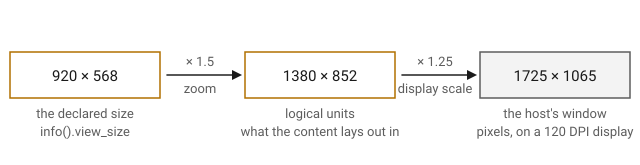

Zoom and Display Scale
Overview
Two scales stand between the size a plugin lays its editor out at and the size of the window the host puts on the screen.
The zoom is the user’s. It makes the whole editor larger or smaller, from half size to double, a tenth at a time, and it is the same in every QPlug plugin: the same keys, the same three menu items, the same two buttons at the right of the header. It rides in the state, so a session comes back at the zoom it was left at.
The display scale is the platform’s. It is how many physical pixels a logical unit takes on the display the window is on, and a plugin neither sets it nor reads it to lay anything out. Everything a plugin sizes is in logical units; the display scale applies once, where a size crosses to the host.

Zooming
There are three ways to zoom, and all of them call the same four functions on the presenter:
-
The keys: the action key, Command on macOS and Control on Windows and Linux, with plus to zoom in, minus to zoom out and zero for the size the plugin declares. The keypad’s own plus, minus and zero work too. The presenter takes the key from the view before the content receives it, so the shortcut works wherever the focus is.
-
The View section of the main menu: Zoom In, Zoom Out and Actual Size, carrying those same shortcuts.
-
The two buttons at the right of the header, which do what Zoom Out and Zoom In do.
A plugin that adds a zoom control of its own calls the same functions.
Zooming in and out walks a grid of stops a tenth apart, counting off the
grid rather than adding to the scale, so walking up and back returns to the
same values rather than drifting. The stops run from zoom_min, 0.5, to
zoom_max, 2.0. A scale arriving from anywhere else, an older state file
or one edited by hand, is rounded to the nearest stop and held within those
two.
Zooming scales the content, which multiplies the content’s limits: a fixed editor of 920 by 568 at a zoom of 1.5 has limits of 1380 by 852. The view notices the new limits on its next draw, and the presenter requests a window to match from the host. The host then sets a size, or leaves the window as it is.
Where the Zoom Lives
The scale belongs to the controller, not to the view, so it outlives the
view it is applied to: zoom() and zoom(scale) read and write the
controller’s view_scale. It is written into the state, under view, so a
reopened editor and a restored session both come back at the scale they
were left at. A preset does not carry it, and a state without it, an older
one or a preset, leaves the zoom where it is.
The editor opens at the declared size taken at the saved scale, and the view is born at that size rather than resized to it afterwards. A host that has already read the declared size can push back on a size asked for after the fact, and then its window and the view disagree.
Logical Units and Physical Pixels
The window API a host speaks decides what a size means to it: Cocoa deals
in logical points, Win32 and X11 in physical pixels. pixel_scale is
physical pixels per logical unit in that API, which is where the two part
company:
-
macOS: 1. Cocoa is already logical.
-
Windows: the window’s DPI over 96, from the system’s DPI before there is a window.
-
Linux: the scale of the monitor under the window’s center, falling back to
Xft.dpiover 96.
It is the same figure Elements draws by, and it is not the editor’s scale:
pixel_scale is what the display imposes, zoom is what the user chose.
A size crossing to the host is multiplied by it and rounded to the nearest
whole pixel, and one arriving from the host is divided back out. Sizes,
limits, resize hints and resize requests all cross that way.
A zoomed size is rarely a whole number of pixels, which is why the presenter takes a size from the host within a pixel of its limits rather than insisting on them exactly. A limit Elements reports as unbounded is held to 32768, which is what a host’s integers take.
| CLAP lets a plugin work the display scale out from the operating system instead of being told it, which is what Elements does, so the host’s own figure is declined. A plugin does not set the display scale. |
Declaration
class presenter
{
public:
void zoom(float scale);
float zoom() const;
void zoom_in();
void zoom_out();
void actual_size();
static constexpr float zoom_min = 0.5f;
static constexpr float zoom_max = 2.0f;
float pixel_scale() const;
};
class controller
{
public:
float view_scale() const;
void view_scale(float s);
};Expressions
Notation
p-
Object of a type derived from
presenter. ctl-
Object of a type derived from
controller. scale-
A
float, the editor’s scale.
Zoom
| Expression | Semantics | Return Type |
|---|---|---|
|
The editor’s scale, 1 for the size the plugin declares. |
|
|
Set it, on the nearest stop and within the limits. |
|
|
One stop larger. |
|
|
One stop smaller. |
|
|
The size the plugin declares. |
|
|
The smallest scale, 0.5. |
|
|
The largest, 2.0. |
|
Each of the four that change the scale lands on a stop and within
zoom_min and zoom_max, so a zoom already at either end stays there. A
scale outside the range is held to it rather than refused, which is why
none of them reports anything back.
The Saved Scale
| Expression | Semantics | Return Type |
|---|---|---|
|
The scale, as saved. |
|
|
Set it. |
|
These are what the presenter’s zoom functions read and write. A plugin
calls the presenter’s, which hold the scale to a stop and apply it to the
live view; the controller’s are the plain accessors the state uses.